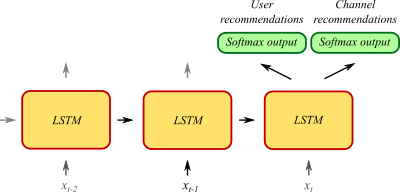

      <section>
        <div class="inner">
          <div class="block block-copy">

<h1>Assisting Discussion Forum Users using Deep Recurrent Neural Networks</h1>
<p><strong>Abstract</strong>: 
We present a discussion forum assistant
based on deep recurrent neural networks (RNNs).
The assistant is trained to perform three different tasks when faced with
a question from a user.
Firstly, to recommend related posts.
Secondly, to recommend other users that might be able to help.
Thirdly, it recommends other channels in the forum where people may
discuss related topics. Our recurrent forum assistant is evaluated experimentally
by prediction accuracy for the end–to–end
trainable parts, as well as by performing an end-user study. We conclude that the
model generalizes well, and is helpful for the users.
<p><em>Fulltext</em>: <a href="hagstedt2016assisting.pdf">PDF</a><br />
<em>Bibtex</em>: <a href="javascript:void(null);" onclick="showBibtex(event, '@article{hagstedt2016assisting,\n  title={Assisting Discussion Forum Users using Deep Recurrent Neural Networks},\n  author={Hagstedt P Suorra, Jacob and Mogren, Olof},\n  journal={Representation Learning for NLP RepL4NLP at ACL 2016},\n  year={2016},\n  publisher={null}\n}\n')">click here</a><br />
<em>Venue: <a href="https://sites.google.com/site/repl4nlp2016/">Representation Learning for NLP</a> at ACL, August 2016</em><br />
<em>Authors</em>: Jacob Hagstedt P Suorra, Olof Mogren</p>
</div>
        </div>
      </section>


